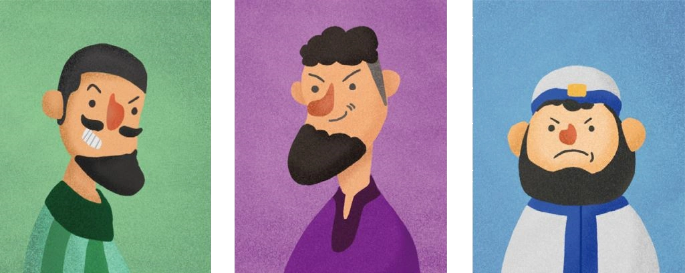

第5章

一陣急促而雜亂的腳步聲，拉開了阿撒爾家早晨的序幕：「大、大事不好啦！」
屋內的阿撒爾正在和家人們吃早飯，他皺著眉頭看著從門外跑進來的家僕：「什麼事慌慌張張的？」
只見那人滿頭大汗，神情甚為恐慌：「吉迪恩，被、被人殺啦！」
碰的一聲，阿撒爾將手中的碗重重的放到桌上：「什麼時候的事？是誰幹的？」
那人沒料到阿撒爾的反應會這麼激烈，一時間嚇得說不出話來：「我、我不知道……」
阿撒爾見再問下去，對方也不見得能回答上來，便煩躁的揮揮手：「知道了，你先下去吧，告訴其他人這事先不要聲張。」
那人走出門，被早晨清涼的微風吹拂過後，才發現他的衣裳早已被冷汗濕透了。
阿撒爾思索了一會兒，對伊特羅道：「吉迪恩下葬的事，還要麻煩你了。」
伊特羅還沒回應，在一旁的奧菲爾就先開口：「這是伊特羅第一次處理祭拜死者的事吧？我之前在大城市看過很多次了，可以在一旁幫忙。」
伊特羅聞言，瞪了奧菲爾一眼，低聲說道：「我才是父親親自設立的祭司！」
奧菲爾沒有接伊特羅的話，只是慢悠悠的說了一句：「為什麼吉迪恩會這麼剛好就在昨天晚上死了，是不是你昨天祭拜時沒有誠心誠意？」
伊特羅一聽這話，心中的火瞬間就冒起來，拍桌指著奧菲爾站了起來：「你胡說！」
阿撒爾這時開口制止了兩人的爭吵：「行了，那就這樣吧。奧菲爾經常去大城市做生意，見識的多，就讓他在一旁幫襯吧！」
伊特羅一聽這不算問句的詢問，氣的直瞪奧菲爾，眼睛像是能噴射出火焰一樣，卻是見奧菲爾朝他得意的一笑。
阿撒爾頓了頓，眼神在伊特羅和奧菲爾之間游移：「至於找尋兇手這事……」
這時，坐在旁邊一直沒有開口的艾迪爾，似是想到什麼，眼珠子一轉，插嘴道：「這件事可以交給我嗎！」
阿撒爾有些吃驚的看著自己的小兒子，沒想到平時只知道遊手好閒的他，今天竟然會主動攬下這件差事。於是十分欣慰的道：「當然！你如果缺什麼，儘管開口跟我要。」
吃過早飯後，艾迪爾出聲叫住奧菲爾。奧菲爾雙手抱胸，站在原地等對方走過來。
艾迪爾拉著奧菲爾的手臂，撒嬌道：「哥，你別生氣嘛～我沒想要跟你們搶事情做。我這不是…… 最近又缺錢了嗎！」平時雖然都在吃喝玩樂，但並不是代表他不懂兄長們的勾心鬥角。
奧菲爾冷哼一聲，揮開艾迪爾：「你要趁機發財可以，別把事情辦砸了就行。」
艾迪爾嘻皮笑臉的應下：「嘻嘻，放心啦，我哪次做事讓你們擔心的。」
奧菲爾眼中閃過一絲不屑，轉身快步離開。
在吉迪恩安葬前，奧菲爾鉅細靡遺的告訴伊特羅等一下祭祀死者的流程，包括剃光額頭前的頭髮、用刀劃身等等。伊特羅鐵青著臉聽著奧菲爾說的每一話，看著在一旁不斷點頭的阿撒爾，根本反駁不了半句。
奧菲爾講完所有規矩後，又補上一句：「既然前幾天的祭拜神不喜悅，要不今天你獻嬰吧？」
伊特羅吸一口冷氣：「我上哪去找個小孩啊！」
奧菲爾拿眼睛瞟了站在不遠處，伊特羅的長子：「既要顯示出誠意，你說要獻誰？」
伊特羅氣得渾身哆嗦，臉色發白，牙齒咬得咯咯響。但也是在這盛怒之下，反而冷靜下來：「行，既然是祭拜吉迪恩，你說要獻誰？」說著，就朝吉迪恩的家人們所站之地走去。
下午，艾迪爾藉口要去找尋殺害吉迪恩的兇手，躲避了他一向厭煩的祭祀活動。
他一邊計畫著等一下的措辭，一邊走向離他家最近的一戶人家裡面。
這個時間點，但凡是有勞動力，能外出工作的，都不會出現在自己家裡，因此當艾迪爾敲開那戶人的大門後，屋子裡面只有婦女與小孩。
艾迪爾環視一下這間簡陋的屋子，緩緩道出來意：「是這樣的，昨天晚上吉迪恩被人給殺了。我知道你們家的男人之前在田裡工作時，曾經與他發生過爭執。現在，我合理的懷疑你們有充分的行兇動機！」
聽到這個突如其來的消息，屋內所有的人都大吃一驚。
一名男孩迅速的反駁：「不可能，昨天晚上我父親回來後就沒出去，根本不可能跑去殺吉迪恩！」
艾迪爾露出一抹玩味的笑容：「我憑什麼相信你們說的話？」
這時，一位年歲稍長的婦女將男孩拉到身後，並從懷中掏出五舍客勒銀子，放到桌上：「我指著永生的耶和華起誓，我們家並沒有殺害吉迪恩的兇手。」
艾迪爾伸出一隻手掠過桌子上頭，微笑著點頭：「好，願耶和華在你我中間為證。」
男孩從他母親身後探出頭來，看著艾迪爾遠離的背影，又低頭看向已經空無一物的桌面，不理解道：「母親！你明明都已經起誓了，就不需要賠償了啊！」
「就算剛剛不給，他還是會找其他藉口。」那婦女並沒有看小孩，而是轉頭望向窗外，微不可察的嘆了口氣：「這已經不是第一次了。」
旗開得勝的艾迪爾一連又去了好幾戶人家，透過敲詐勒索的方式，拿到不少錢財。
艾迪爾抿著嘴，掂了掂手上的銀袋子，好像還是輕了點。但他也心知肚明，自己不能將人逼的太狠，畢竟兔子逼急了還會咬人呢。